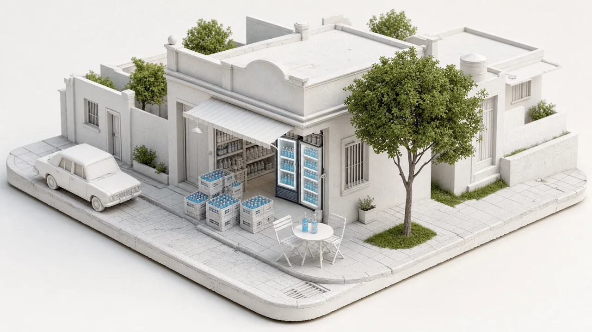
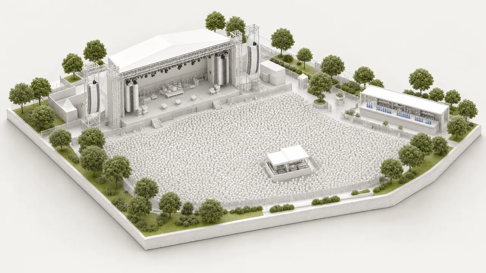
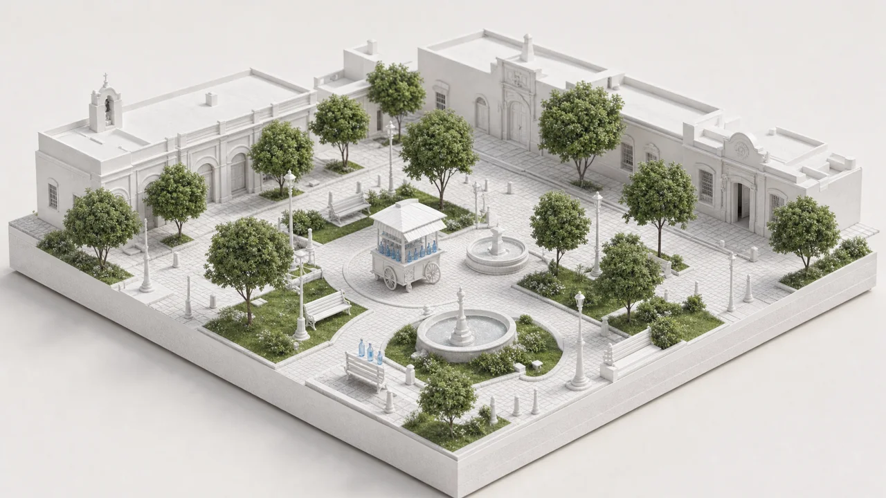
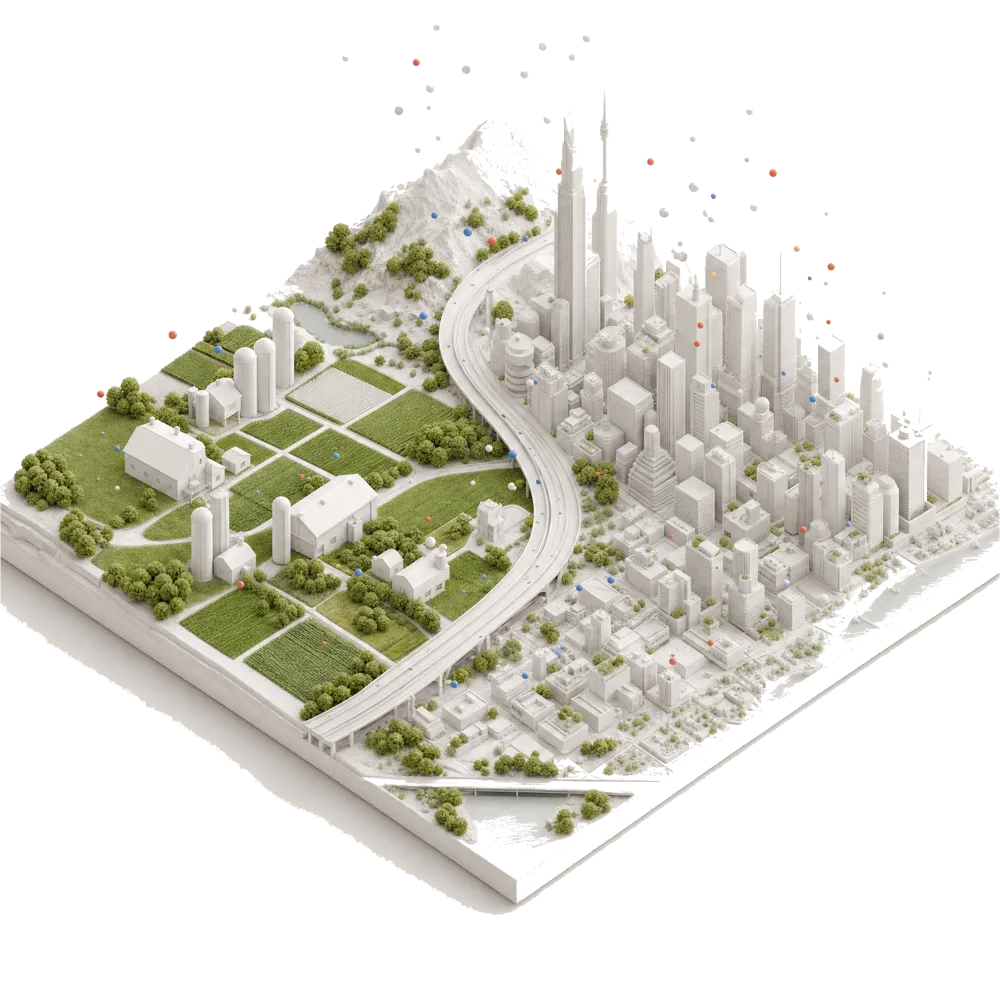

Si sube el boleto, ¿quién lo siente primero?
Un aumento del 30% contado de tres maneras.
Trabajadores que viajan a diario78%
Estudiantes71%
Quienes van en auto34%
Rechazo por grupo · ilustrativo
Cómo reacciona la gente ante un anuncio, una imagen o un video, y qué cambia según cómo se cuente. Corridas del panel, no pronósticos. Ejemplos ilustrativos.
Un aumento del 30% contado de tres maneras.
Rechazo por grupo · ilustrativo

0:15
0:15
0:15Tres versiones del mismo video.
Lo compraría · ilustrativo

La misma noticia, dos países distintos.
Por tipo de lugar · ilustrativo